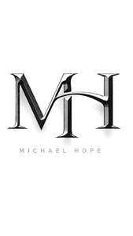

Trade Mark Journal No.2026/005 30 January 2026
UK00004325596 17 January 2026 (25,35,42)

- Class 25
- Clothing; Knitwear [clothing]; Jackets [clothing]; Ready-to-wear clothing; Woolen clothing; Furs [clothing]; Garments for protecting clothing; Linen clothing; Headbands [clothing]; Headbands for clothing; Gloves [clothing]; Gloves as clothing; Clothes; Maternity clothing; Kerchiefs [clothing]; Jerseys [clothing]; Denims [clothing]; Shorts [clothing]; Oilskins [clothing]; Silk clothing; Leather clothing; Clothing of leather; Leather (Clothing of -); Collars [clothing]; Parts of clothing, footwear and headgear; Knitted clothing; Veils [clothing]; Windproof clothing; Hoods [clothing]; Embroidered clothing; Belts [clothing]; Belts for clothing; Rainproof clothing; Waterproof clothing; Casual clothing; Visors [clothing]; Jackets being sports clothing; Jackets (Stuff -) [clothing]; Stuff jackets [clothing]; Bottoms [clothing]; Playsuits [clothing]; Clothing for leisure wear; Ready-made clothing; Latex clothing; Woven clothing; Infant clothing; Drawers [clothing]; Drawers as clothing; Leisure clothing; Clothing for sports; Sports clothing; Ties [clothing]; Athletic clothing; Clothing for children; Muffs [clothing]; Bodies [clothing]; Clothing for babies; Tops [clothing]; Clothing for infants; Weatherproof clothing; Fabric belts [clothing]; Water-resistant clothing; Handwarmers [clothing]; Beach clothing; Thermal clothing; Chaps (clothing); Men's clothing; Mitts [clothing]; Dance clothing; Plush clothing; Sports wear; Clothes for sports; Tennis wear; Sports jerseys and breeches for sports; Sports shoes; Sports garments; Sports shirts; Footwear for sports; Sports footwear; Sports pants; Sports jackets; Sports clothing [other than golf gloves]; Leisure wear; Sports jerseys; Sports bras; Sports vests; Sports socks; Footwear not for sports; Sports headgear [other than helmets]; Headgear for wear; Ski wear; Sports singlets; Clothes for sport; Moisture-wicking sports shirts; Sport shirts; Shoes for casual wear; Sports over uniforms; Sport shoes; Sports bibs; Moisture-wicking sports pants; Exercise wear; Moisture-wicking sports bras; Casual wear; Footwear for use in sport; Footwear for sport; Articles of sports clothing; Sports caps; Sports caps and hats; Ladies wear; Swim wear for children; Sports [Boots for -]; Formal wear; Sport coats; Evening wear; Rain wear; Children's wear; Head wear; Sashes for wear; Sports shirts with short sleeves; Face masks [fashion wear] ; Athletic uniforms; Athletics footwear; Infant wear; Athletics shoes; Athletic footwear; Athletic shoes; Swim wear for gentlemen and ladies; Football shoes; Headwear; Visors [headwear]; Visors being headwear; Bonnets [headwear]; Caps [headwear]; Caps being headwear; Leather headwear; Fishing headwear; Peaked headwear; Sun visors [headwear]; Children's headwear; Headgear; Beanie hats; Fashion hats; Hats; Party hats [clothing]; Beanies; Thermal headgear; Visors [hatmaking]; Gloves for apparel; Bobble hats; Toques [hats]; Baseball caps and hats; Baseball hats; Cap visors; Hats (Paper -) [clothing]; Paper hats [clothing]; Paper hats for use as clothing items; Ski hats; Fur hats; Caps with visors; Neckwear; Sun hats; Golf clothing, other than gloves; Outerwear; Headbands; Mufflers [clothing]; Woolly hats; Ushankas [fur hats]; Mitres [hats].
- Class 35
- Retail services connected with the sale of clothing and clothing accessories.
- Class 42
- Design of clothing, footwear and headgear; Designing of clothing; Design of clothing; Design of clothing accessories; Design of headgear; Hat design; Design of fashion accessories.
Anthony Stephens